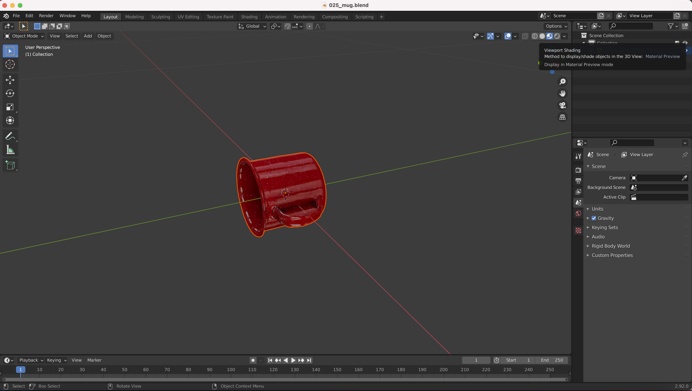

Adding Custom Controls¶
By default, 3DB comes with a number of controls that allows the user to manipulate the simulated scene.
We will now go through the steps for implementing a custom control module. To make things clearer, we’ll actually re-implement:
A “preprocessing” control,
OrientationControl, that controls the main object’s location in the scene.A “postprocessing” control,
CorruptionControl, that adds corruptions to the rendered scenes.
PreProcessControl¶
These type of controls are implemented to change/control the scene before an
image of the scene is rendered, e.g., move objects around, add occlusion,
change camera properties, change the scale of the object, etc. All it takes to
implement a new preprocess control is to subclass the provided base class,
threedb.controls.base_control.PreProcessControl:
from threedb.controls.base_control import PreProcessControl
from typing import Any, Dict, Tuple
import numpy as np
class OrientationControl(PreProcessControl):
pass
In order to make this a valid preprocessing control, we need to provide implementations of two
abstract functions: __init__, and apply. It can sometimes help to (optionally) implement
the unapply function.
The __init__() is the place to define the arguments needed by the control:
def __init__(self, root_folder: str):
continuous_dims = {
'rotation_x': (-np.pi, np.pi),
'rotation_y': (-np.pi, np.pi),
'rotation_z': (-np.pi, np.pi),
}
super().__init__(root_folder, continuous_dims=continuous_dims)
Next, we need to implement the apply() function, which is called whenever a control is to be applied to the scene:
def apply(self, context: Dict[str, Any], control_args: Dict[str, Any]) -> None:
"""Rotates the object according to the given parameters
Parameters
----------
context : Dict[str, Any]
The scene context object
control_args : Dict[str, Any]
The parameters for this control, ``rotation_x``, ``rotation_y``, and
``rotation_z``. See the class docstring for their documentation.
"""
no_err, msg = self.check_arguments(control_args)
assert no_err, msg
obj = context['object']
obj.rotation_mode = 'XYZ'
obj.rotation_euler = (control_args['rotation_x'],
control_args['rotation_y'],
control_args['rotation_z'])
Finally, assign the name of the control to a variable Control:
Control = OrientationControl
Note that for some controls, the user might also need to implement an unapply() function, which reverses the effects of the control after an image is rendered.
After this function is called, the scene is reset for subsequent renders and controls applications.
See threedb.controls.blender.position.PositionControl for an example.
In the case of PositionControl, the apply function translates the position by a specific vector.
Thus, implementing unapply ensures that all calls to apply begin from the same original position.
Note
How do we know what code to write in apply (and unapply)?
To find out, you will first need to download Blender and modify the object’s .blend file yourself in Blender. Then, the corresponding line of code will appear in the Scripting tab.
Here, we include step-by-step pictures showing how to find the code for OrientationControl, using the 025_mug.blend file from the https://github.com/3db/blog_demo repo and Blender version 2.92.0.
First, open Blender.
{kind=link}
2. Click on File >> Open and select 025_mug.blend. You can optionally zoom in and click on “Viewport Shading” in the upper right corner to make the mug look like it does in the picture below.
{kind=link}
Select the mug object, then select Object Properties in the middle right sidebar.
{kind=link}
Change the Mode to XYZ Euler, and update the Rotation X, Y, Z values to 180, 90, and 45, respectively.
{kind=link}
5. Finally, click on the Scripting tab in the upper right. The code you need to write will appear in the bottom left panel!
(The variable bpy.context.object in the panel corresponds to context['object'] in the code for OrientationControl)
{kind=link}
PostProcessControl¶
These type of controls are implemented to modify the rendered image, e.g., add image-level corruptions, change background color, etc.
All it takes to implement a new postprocess control is to subclass the provided base class,
threedb.controls.base_control.PostProcessControl:
from threedb.controls.base_control import PostProcessControl
from typing import Any, Dict, Tuple
class CorruptionControl(PostProcessControl):
pass
In order to make this a valid postprocessing control, we need to provide implementations of two
abstract functions: __init__, and apply.
Similar to before, the __init__() is the place to define the arguements needed by the control:
def __init__(self, root_folder: str):
discrete_dims = {
'severity': [1, 2, 3, 4, 5],
'corruption_name': ['gaussian_noise', 'shot_noise', 'impulse_noise',
'defocus_blur', 'glass_blur', 'motion_blur',
'zoom_blur', 'snow', 'frost', 'fog',
'speckle_noise', 'gaussian_blur', 'spatter',
'saturate', 'brightness', 'contrast',
'elastic_transform', 'pixelate',
'jpeg_compression']
}
super().__init__(root_folder,
discrete_dims=discrete_dims)
Next, we need to implement the apply() function, which is called whenever a control is to be applied to the scene:
def apply(self, render: ch.Tensor, control_args: Dict[str, Any]) -> ch.Tensor:
"""Apply an Imagenet-C corruption on the rendered image.
Parameters
----------
render : ch.Tensor
Image to transform.
control_args : Dict[str, Any]
Corruption parameterization, must have keys ``corruption_name`` and
``severity`` (see class documentation for information about the
control arguments).
Returns
-------
ch.Tensor
The transformed image.
"""
args_check = self.check_arguments(control_args)
assert args_check[0], args_check[1]
sev, c_name = control_args['severity'], control_args['corruption_name']
img = render.numpy()
img = img.transpose(1, 2, 0)
img = (img * 255).astype('uint8')
img = corrupt(img, severity=sev, corruption_name=c_name)
img = img.transpose(2, 0, 1)
img = img.astype('float32') / 255
return ch.from_numpy(img)
Finally, assign the name of the control to a variable Control:
Control = CorruptionControl
Note that for postprocess controls, we don’t need the unapply() method, since all the changes are done at the image
level, and the actual simulation scene is not altered.